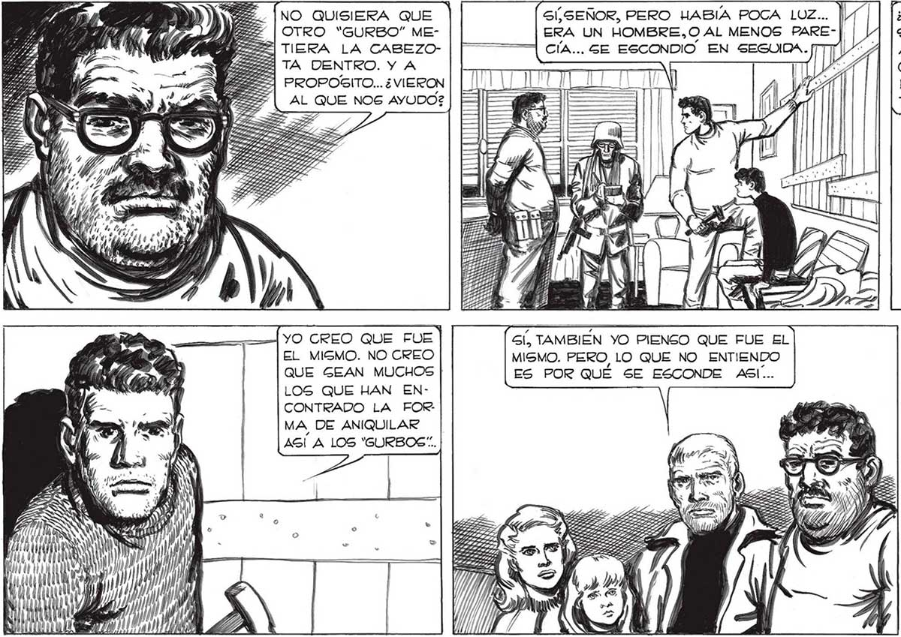

¿QUE LES PARECE? ¿HABRA SIDO EL MISMO QUE NOS AYUDO CON LOG “GURBOS” QUE NOS PERSIGUIERON EN EL CAMION? ES UN DA TO IMPORTANTE PARA LA HISTORIA ... SÍ, SEÑOR, PERO HABIA POCA LUZ... ERA UN HOMBRE,O AL MENOS PARECÍA... GE ESCONDIO EN TP Ys NO QUISIERA QUE OTRO “GURBO” METIEERA LA CABEZOa 2 TA DENTRO. Y A A PROPOGITO... ¿VIERON AL QUE NOG AYUDO? .. ¿QUÉ PASARA AHORA, ¿QUE SIGNIFICA TODO ESTO,ESAS EXPLOGIONES, ESOS MONSTRUOS QUE HACEN RETEMBLAR TODO CUANDO PASAN ?2 Gí, TAMBIEN YO PIENSO QUE FUE EL MISMO. PERO, LO QUE NO ENTIENDO ES POR QUÉ SE ESCONDE ASI... YO CREO QUE FUE EL MISMO. NO CREO QUE GEAN MUCHOS LOS QUE HAN ENCONTRADO LA FOR: MA DE ANIQUILAR AS! A LOS "GURBOS”.. LOS QUE ALLA EN EL NORTE ORGANIZARON EL CONTRAATAQUE DEBEN SABER TODO CUANTO PERDONA, JUAN...PERO YA HABRA TIEMPO PARA EXPLICACIONES. LO IMPORTANTE AHORA ES EMPREN.DE UNA VEZ EL VIAJE AL NORTE. LA INFORMACION QUE HEMOS RECOGIDO ES DE IMPORTANCIA VITAL; SOY UN CONVENCIDO DE QUE LOS ELLOS VOLVERAN Elena NO SABÍA DE QUÉ HABLABAMOS. CLARO, ELLA Y MARTITA HABIAN QUEDADO ENCERRADAS EN EL CHALET; NI TENÍAN IDEA TODA VIA DE LA INVASION DE LOS ELLOS. PENSE UN MOMENTO POR DÓNDE EMPEZAR EL RELATO. PERO FAVALLI ME INTERRUMPIO, AL ATAQUE ...
